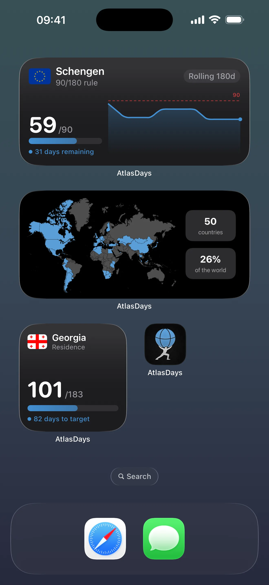

Home Screen Widgets
Last updated: July 10, 2026
Add a tracker or your world map to your iPhone Home Screen and see your day count at a glance — without opening the app.
What Widgets Do
AtlasDays widgets display a snapshot of your current trip record on the iPhone Home Screen. AtlasDays refreshes their data when the record changes, while iOS controls the final WidgetKit refresh timing.
You can add:
- a free small Tracker Status widget showing the current count and status for a tracker
- Pro medium and large Tracker Trend widgets with charts, forecasts, and trip context
- a free World Map widget showing your visited-country map in small, medium, or large

Widgets reflect your current trip record. If an ongoing trip is still open, the widget count will move day by day until you close it. If the widget looks off, check the tracker setup and trip record inside the app first.
How to Add a Widget
- Long-press an empty area on your iPhone Home Screen until apps begin to jiggle.
- Tap the + button in the top-left corner.
- Search for AtlasDays in the widget gallery.
- Choose the widget type — Tracker or World Map.
- Swipe through the size options: small, medium, or large.
- Tap Add Widget, then drag it into position.
- To choose a tracker, long-press the placed Tracker widget, tap Edit Widget, and select the tracker.
You can add multiple widgets to show different trackers side by side.
Widget Sizes
Small
The free Tracker Status layout shows the tracker name, current count, and status. The World Map is also available in small.
Medium
The Pro Tracker Trend layout shows the tracker name, count, progress, and a compact chart with projected activity. The free World Map is also available in medium.
Large
The Pro Tracker Trend layout shows the full tracker summary, chart, and relevant trip context. The free World Map is also available in large.
Tracker Forecasts in Widgets
Medium and large Tracker Trend widgets require AtlasDays Pro. Their projected chart is derived from planned future trips in the tracker's country set.
- The forecast is as precise as the trips behind it. Planned trips saved as Exact Dates appear in the forecast; Year and Unknown trips do not.
- If you change or cancel a planned trip inside the app, AtlasDays writes a new widget snapshot; iOS may take a short time to display it.
- An open ongoing trip uses today as the end date in the forecast, so the count moves forward until you close the trip.
Choosing Which Tracker a Widget Shows
After adding a Tracker widget, long-press it and choose Edit Widget, then select the tracker from the list. If you only have one tracker, AtlasDays uses it by default. A normal tap on the widget opens that tracker in AtlasDays; it does not open configuration.
Each widget remembers its own tracker selection independently, so you can have a Schengen widget and a Residence widget on the same Home Screen.
If you choose a US State tracker, the widget follows that tracker exactly. Plain United States trips do not feed a state-specific tracker unless the trips are tagged with that state.
AtlasDays Pro is required for multiple trackers and for the medium and large Tracker Trend layouts. The free plan includes one tracker, the small Tracker Status widget, and every size of the World Map widget.
Why a Widget Might Look Wrong
- Widget shows a stale number: widgets refresh periodically. Open the app once to force a refresh if the number looks out of date.
- Widget count differs from the app: make sure the widget is pointing at the correct tracker. Long-press it and choose Edit Widget to check.
- Medium or large tracker widget says Pro Widget: those Tracker Trend layouts require AtlasDays Pro. Use the small Tracker Status widget for the free tracker view.
- Widget shows no data: the app needs to have been opened at least once after install for widgets to have data to display.
- Forecast is missing: the forecast only appears when you have upcoming exact-date trips in the tracker's country set. Add or fix those trips inside the app.
World Map Widget
The free World Map widget displays a miniature version of your visited-country map, updated from your trip record. It is available in small, medium, and large sizes.
Visited-country counting follows the same rules as the in-app map: a country is visited when you have at least one non-Transit trip there, regardless of trip precision.
The World Map widget is country-level. Individual US state boundaries and state fills appear only in the full-screen in-app map, not in the widget.
Where to go next
Trackers and Limits explains how to set up a tracker correctly so the widget shows a trustworthy number.
Trip Modes and Record Quality covers how trip precision affects both tracker math and widget forecasts.
Dashboard and Map explains visited-country counting if the map widget looks off.
AtlasDays Pro explains which tracker, widget, and US state features require Pro.